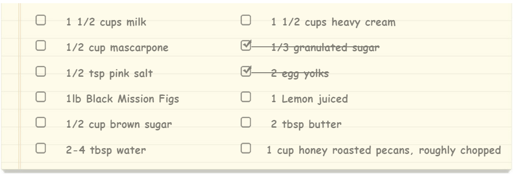

Chocolate Pizza
POSTED ON 15 DEC 2013 / DESSERTS

For the fig-swirl:Melt butter over medium heat in a saucepan. Add brown sugar and stir to
dissolve. Halve all
of the figs and toss in the saucepan with water and lemon juice. Cook over medium heat, stirring frequently,
until you have a chunky-jammy mixture. Add salt with one or two stirs, set aside an dlet cool completely.
cream:In a small pot over medium heat, combine milk, and granulated sugar until sugar is completely
dissolved and the milk is just barely lukewarm.Wish in the egg yolks. Set mixture in the fridge and wait
until the fig mixture is cooled.
Using an ice cream machine, pour liquids into the frozen basin and process according to manufacturer
instructions,i.e., let spin and thicken for 20 minutes before adding mascarpone, fig jam mixture, and the
nuts.Countinue to process for +/- 10 minutes. Pour semi-frozen mixture into a pyrex dish or glass
tupperware.Freeze for at least twohours before serving.


Vanessa Stevenson
Food enthusiasm,photography fan.Add pinch of raw foodism and that's much who I am.